-
Alecrim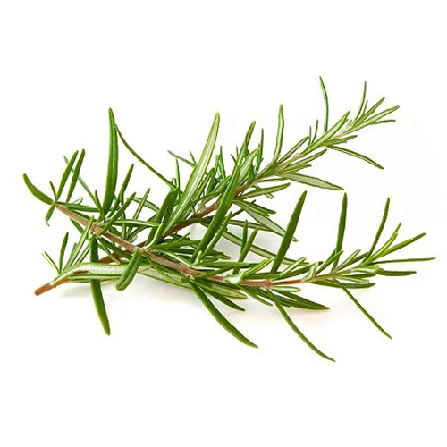
- Rosmarinus officinalis
Aplicações cosméticas: Cabelos enfraquecidos, atua na celulite, controla a oleosidade da pele e nos poros dilatados.
Aplicações no campo emocional: Contribui para a autovalorização, autoestima, concentração, disposição, alegria e é estimulante.
Contra-indicações: para os 3 primeiros meses de gestação
Componentes principais: 1,8-cineol, cânfora e alfa-pineno.
Método de extração: Destilação por arraste de vapor da planta.
Nota olfativa: Média.
Classificação de fragrância: Herbáceo.
Família: Lamiaceae.
DICA DE USO: Para controle de queda durante a transição capilar. Pingue 10 gotas do óleo essencial de Alecrim em 30ml do óleo vegetal de Jojoba. Misture bem e aplique na raiz do cabelo e massageie. Deixe agir por 20 minutos e lave como de costume. O óleo essencial de Alecrim também auxilia na autoconfiança, sendo um ótimo aliado nesse processo.
-
Bergamota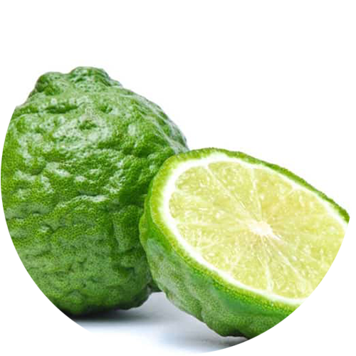
- Citrus bergamia
Aplicações cosméticas: Equilibra a oleosidade da pele, útil para casos de excesso de sebo do couro cabeludo, age como detox, atua na celulite.
Aplicações no campo emocional: Tem aroma levemente floral. Auxilia na autoestima, autoconfiança, alegria, ajuda a equilibrar comportamento autodestrutivo.
Precauções: fototóxico, deve ser diluído, tóxico para gatos
Componentes principais: Acetato de linalila, limoneno e linalol.
Método de extração: Prensagem a frio da casca.
Nota olfativa: Alta.
Classificação de fragrância: Cítrico.
Família: Rutaceae.
-
Canela
- Cinamommum cassia
Aplicações cosméticas:Ajuda nos tratamentos estéticos contra a celulite, além de ser ótimo para os cabelos, proporcionando brilho e luminosidade.
Aplicações no campo emocional: Atua contra o desânimo, fadiga mental e a sonolência.
Contra-indicações: para gestantes
Precauções: deve ser diluído, tóxico para gatos
Componentes principais:Aldeído cinâmico.
Método de extração: Destilação por arraste de vapor das folhas.
Nota olfativa: Média.
Classificação de fragrância: Penetrante.
Família: Lauraceae.
Precauções: Não usar puro sobre a pele. Diluir em óleo vegetal. Em caso de sensibilização procure orientação médica. Manter ao abrigo da luz, calor e fora do alcance das crianças. Evite este óleo se estiver gestante. Em altas concentrações, pode irritar a pele e mucosa. Na pele, use sempre diluído em óleo vegetal ou creme na concentração de 0,05%. Contraindicado para pessoas sensíveis a algum componente da fórmula.
-
Copaíba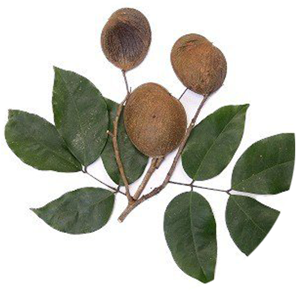
- Copaifera officinalis
Aplicações cosméticas: Ajuda na beleza das unhas.Além de ser potente para rugas, espinhas e acnes.
Aplicações no campo emocional: O óleo essencial de Copaíba tem a energia da árvore copaibeira, firme e com estrutura sólida. Dessa forma, a energia desse óleo essencial pode ajudar pessoas que se sentem fragilizadas.
Componente principal: Beta-cariofileno.
Método de extração: Destilação fracionada do bálsamo.
Nota olfativa: Baixa.
Classificação de fragrância: Resinosa, balsâmica, adocicada.
Família: Fabaceae.
-
Cravo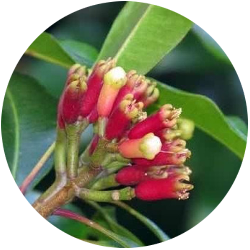
- Eugenia caryophyllata
Aplicações cosméticas: Contribui na beleza das unhas.
Aplicações no campo emocional: Revitalizante, inspira iniciativa, ação, libera energia estagnada do ambiente e atua na fadiga mental, revigorando a memória.
Contra-indicações: para gestantes, para crianças menores de 2 anos, para lactantes
Precauções: deve ser diluído
Componente principal: Eugenol.
Método de extração: Destilação por arraste de vapor das folhas.
Nota olfativa: Média.
Classificação de fragrância: Penetrante.
Família: Myrtaceae.
Precauções: Não usar puro sobre a pele. Diluir em óleo vegetal. Em caso de sensibilização procure orientação médica. Manter ao abrigo da luz, calor e fora do alcance das crianças. Contraindicado para pessoas sensíveis a algum componente da fórmula.
-
Eucalipto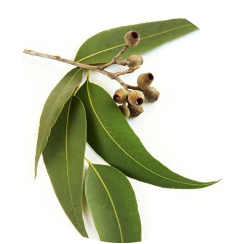
- Eucalyptus globulus
Aplicações cosméticas: Útil contra a acne e limpeza do couro cabeludo.
Aplicações no campo emocional: Estimula a mente, expande os pensamentos, renova a energia, ativa a concentração e o foco.
Contra-indicações: para os 3 primeiros meses de gestação
Precauções: tóxico para gatos
Componente principal: 1,8-cineol.
Método de extração: Destilação por arraste de vapor das folhas.
Nota olfativa: Alta.
Classificação de fragrância: Herbáceo.
Família: Myrtaceae.
-
Gerânio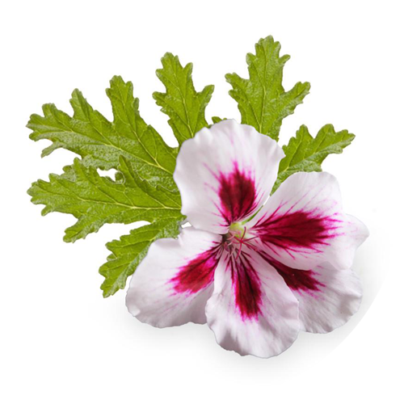
- Pelargonium graveolens
Aplicações cosméticas: Equilibra oleosidade capilar, excelente para peles maduras, ameniza rugas e linhas de expressão.
Aplicações no campo emocional: Ajuda a estimular a coragem e a força. Trabalha a autoestima, autoaceitação e autoperdão.
Contra-indicações: para os 3 primeiros meses de gestação
Precauções: tóxico para cães e gatos
Componentes principais: Citronelol e geraniol.
Método de extração: Destilação por arraste de vapor das folhas.
Nota olfativa: Média.
Classificação de fragrância: Floral, fresco, levemente adocicado.
Família: Geraniaceae.
-
Hortelã-Pimenta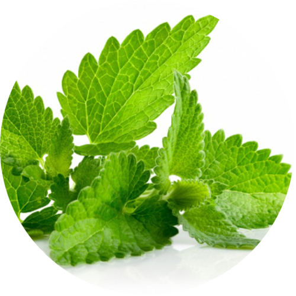
- Mentha piperita
Aplicações cosméticas: Auxilia na redução de manchas escuras de pele, crescimento capilar, age na celulite, sendo muito útil em massagens estéticas.
Aplicações no campo emocional: Expande os pensamentos, refresca e revigora a mente. Extremamente aromático, ajuda na concentração. Contribui a elevar a energia e o ânimo.
Contra-indicações: para gestantes, para crianças menores de 2 anos, para lactantes
Precauções: deve ser diluído, tóxico para gatos
Componentes principais: Mentol e mentona.
Método de extração: Destilação por arraste de vapor das folhas.
Nota olfativa: Alta.
Classificação de fragrância: Mentolado.
Família: Lamiaceae.
DICA DE USO: Estimule o crescimento dos cabelos. Misture 20 gotas do óleo essencial de Hortelã-Pimenta + 50ml de óleo vegetal de Abacate + 210ml do extrato de Aloe Vera. Coloque a sinergia em um frasco borrifador, agite bem e borrife nos cabelos todos os dias. O óleo essencial de Hortelã-Pimenta também é ótimo para persistência, irá ajudar a seguir o processo até o final.
-
Laranja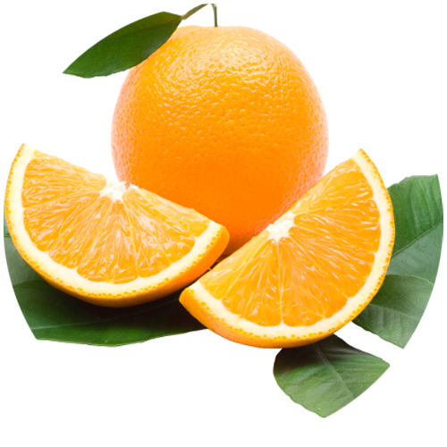
- Citrus sinensis
Aplicações cosméticas: Age na retenção de líquidos, celulite e gorduras localizadas. Útil para poros dilatados e pele com linhas de expressão.
Aplicações no campo emocional: Indicado para alegria, descontração, movimento e expressão.
Contra-indicações: para os 3 primeiros meses de gestação
Precauções: deve ser diluído, tóxico para gatos
Componente principal: Limoneno.
Método de extração: Prensagem da casca da laranja doce.
Nota olfativa: Alta.
Classificação de fragrância: Cítrica.
Família: Rutaceae.
-
Lavanda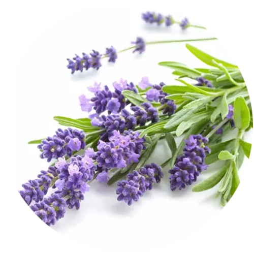
- Lavandula officinalis
Aplicações cosméticas: Ameniza rugas e linhas de expressão, acne, espinhas e equilibra a oleosidade da pele.
Aplicações no campo emocional: Proporciona tranquilidade e acalma a mente de pensamentos conturbados.
Precauções: tóxico para gatos
Componentes principais: Linalol e Acetato de Linalila.
Método de extração: Destilação por arraste de vapor das flores.
Nota olfativa: Média.
Classificação de fragrância: Floral/Herbáceo.
Família: Lamiaceae.
-
Limão-Sicíliano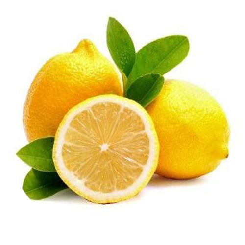
- Citrus limon
Aplicações cosméticas: : Indicado para massagens redutoras, drenagem linfática, pois ajuda a diminuir a retenção de líquidos. Equilibra a oleosidade da pele e da raiz dos cabelos.
Aplicações no campo emocional: Ameniza angústia, proporciona clareza e ânimo. Trabalha nos conflitos emocionais, ajuda na concentração de crianças em idade escolar.
Precauções: deve ser diluído, fototóxico, tóxico para gatos
Componentes principais: Limoneno, beta-pineno e gama-terpineno.
Método de extração: Prensagem da casca.
Nota olfativa: Alta.
Classificação de fragrância: Cítrico.
Família: Rutaceae.
-
Melaleuca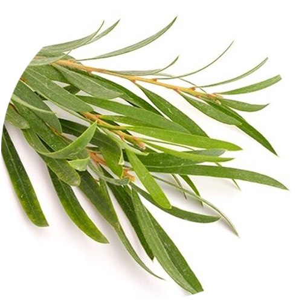
- Melaleuca alternifolia
Aplicações cosméticas: Previne acnes e equilibra a oleosidade da pele. Fortalece os cabelos quebradiços.
Aplicações no campo emocional: Proporciona ânimo e vigor.
Precauções: tóxico para cães e gatos
Componentes principais: Terpinen-4-ol e 1,8-cineol.
Método de extração: Destilação por arraste de vapor das folhas.
Nota olfativa: Média.
Classificação de fragrância: Fresco, amadeirada, herbal.
Família: Myrtaceae.
-
Olíbano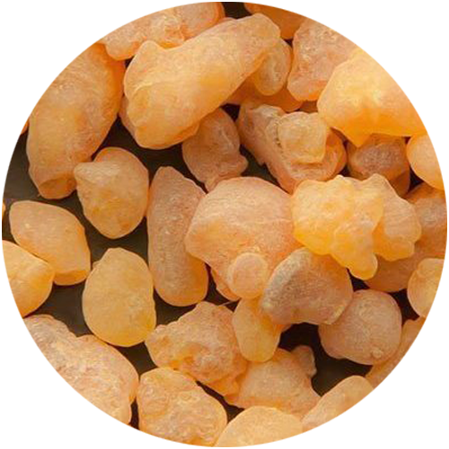
- Boswellia carteri
Aplicações cosméticas:Auxilia a prevenir rugas e marcas de expressão, amenizando casos de acne e clareando a pele. Promove fortalecimento e brilho aos fios secos e sem vida.
Aplicações no campo emocional:Atua nos momentos meditativos, tranquilizando a mente.
Contra-indicações: para os 3 primeiros meses de gestação
Precauções: deve ser diluídos
Componentes principais:Alfa-pineno, alfa-tujeno e limoneno.
Método de extração:: Destilação por arraste de vapor da resina.
Nota olfativa: Baixa.
Classificação de fragrância:: Fresca, amadeirada.
Família: Burseraceae.
-
Patchouli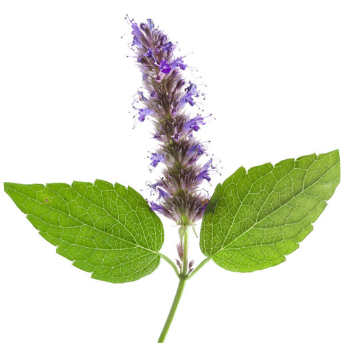
- Pogostemon patchouli
Aplicações cosméticas: Auxilia na manutenção da saúde da pele, amenizando rachaduras, rugas e estrias. Bastante utilizado em massagens diminuindo a retenção de líquidos.
Aplicações no campo emocional: : Promove o aterramento no presente, muito indicado para pessoas distraídas. Expande a força vital e fortalece a vontade de viver. Excelente fixador de sprays aromáticos.
Contra-indicações: para os 3 primeiros meses de gestação
Precauções: deve ser diluídos
Componentes principais: Patchoulol e alfa-guaiene.
Método de extração: Destilação por arraste de vapor das folhas secas.
Nota olfativa: Baixa.
Classificação de fragrância: Terral, almiscarado, amadeirado próximo ao frutal.
Família: Lamiaceae.
-
Sálvia-Esclareia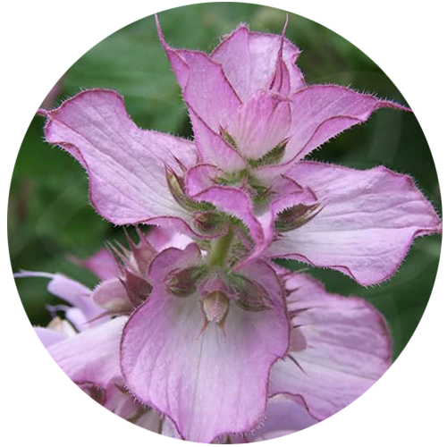
- Salvia sclarea
Aplicações cosméticas: Cuida da pele prevenindo rugas e acnes. No cabelo, auxilia no fortalecimento, crescimento dos fios e oleosidade excessiva.
Aplicações no campo emocional: Energiza a mente e permite experimentar a quietude da alegria. Proporciona clareza mental.
Contra-indicações: para gestantes, para crianças menores de 2 anos, para lactantes
Precauções: deve ser diluídos
Componentes principais: Acetato de linalila e linalol.
Método de extração: Destilação por arraste de vapor da planta.
Nota olfativa: Média.
Classificação de fragrância:Terral, herbal.
Família: Lamiaceae.
DICA DE USO: Para fortalecer e nutrir os fios frágeis durante a transição capilar. Pingue 10 gotas do óleo essencial de Sálvia Esclareia em 60ml do óleo vegetal de Abacate. Aplique por mechas, do comprimento até as pontas, evitando a raiz. Deixe agir por 1 hora e lave. Para auxiliar no processo, o óleo essencial de Sálvia Esclareia também pode ser utilizado para fortalecer o lado feminino da mulher.